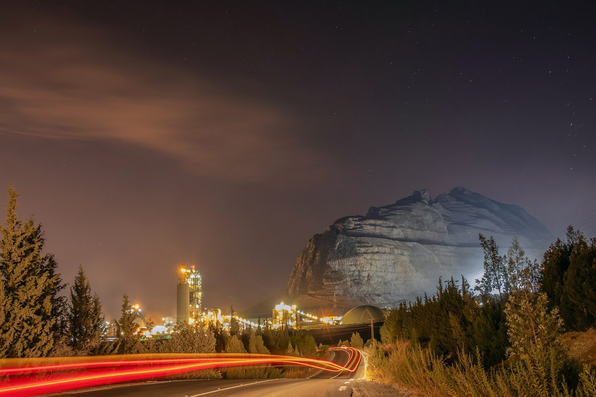

Carrières
640 personnes font tourner un four, une carrière, un terminal et deux dépôts. Nous recrutons à Matadi, Kinshasa, Boma et Kikwit.
Pourquoi nous rejoindre
Formation
Centre de formation interne, habilitations électriques et levage, parcours d'apprentissage de 18 mois pour les jeunes diplômés.
Salaire et protection
Grille salariale publiée, assurance santé pour la famille, transport et cantine pris en charge.
Sécurité
L'usine la plus sûre du groupe : LTIFR de 0,9. Nous ne transigeons pas.
Progression
Sept membres du comité de direction ont commencé comme techniciens ou stagiaires.
Postes ouverts
- Ingénieur(e) procédé cuissonMatadi · Production · CDI · Clôture 5 octobre 2026
- Électromécanicien(ne) de maintenanceMatadi · Maintenance · CDI · 3 postes · Clôture 12 octobre 2026
- Technicien(ne) de laboratoire cimentMatadi · Qualité · CDI · Clôture 28 septembre 2026
- Responsable de dépôtKikwit · Logistique · CDI · Clôture 19 octobre 2026
- Chauffeur(se) poids lourd, toupieKinshasa · Logistique · CDD 12 mois · 4 postes · Clôture 30 septembre 2026
- Commercial(e) grands comptes BTPKinshasa · Commercial · CDI · Clôture 26 octobre 2026
- Contrôleur(se) de gestion industrielMatadi · Finance · CDI · Clôture 9 octobre 2026
- Stagiaire QHSEMatadi · QHSE · Stage 6 mois · Clôture 15 novembre 2026
Postuler
Une candidature, une réponse : chaque candidat reçoit un SMS sous 48 h et une réponse sous trois semaines.
Emploi local
96 % de nos salariés sont congolais et 71 % viennent du Kongo Central. À compétences égales, la priorité va aux candidats des groupements voisins de la carrière et de l'usine. Nous ne demandons jamais d'argent pour un recrutement : signalez toute demande à la ligne verte.

Photo d'illustration (Thatlowdownwoman, CC BY-SA 4.0).